Pred izumom · BD × AI Lab
Dayton 1903
Pet dejanj v čevljih Wilburja in Orvilla Wrighta, od delavnice koles leta 1899 do prvega leta na Kitty Hawku decembra 1903. Lahko samo bereš zgodbo ali pa na ključnih mestih sam poskusiš izumiti, kar sta izumila onadva.
Dejanje 1 · Dayton, Ohio · 1899
Problem, ki ga nihče ne rešuje
Si v delavnici koles Wright Cycle Company v Daytonu. Wilbur ima 32 let, Orville 27. Kolesa prodajata, popravljata in izdelujeta sama. Znata delati z lahkimi cevmi, verigami, zobniki in ležaji. Nobeden nima fakultete.
Tri leta prej, 9. avgusta 1896, je jadralnemu letalu Otta Lilienthala v Nemčiji upadel vzgon. Padel je s približno 15 metrov in naslednji dan umrl. Za sabo je pustil več kot 2000 poletov z jadralnimi letali, ki jih je zgradil sam, in fotografije, ki so obkrožile svet.
Maja 1899 Wilbur piše Smithsonovemu inštitutu in prosi za gradivo o letenju. Dobi kup člankov o dotedanjih poskusih. Tajnik inštituta Samuel Langley je leta 1896 izstrelil parni model brez pilota, ki je preletel skoraj kilometer.
Večina se ukvarja z dvema vprašanjema: kako dobiti dovolj vzgona in kako dobiti dovolj močan motor. Ravnotežje bi nastalo samo od sebe, letalo pa bi krmilili kot ladjo. Lilienthal je ravnotežje lovil tako, da je med letom premikal noge in telo. Wilbur kot kolesar vidi drugače. Kolo ni stabilno samo po sebi, kolesar ga ves čas uravnava. Zato misli, da manjka tretje vprašanje: kako pilot nadzoruje letalo v zraku.
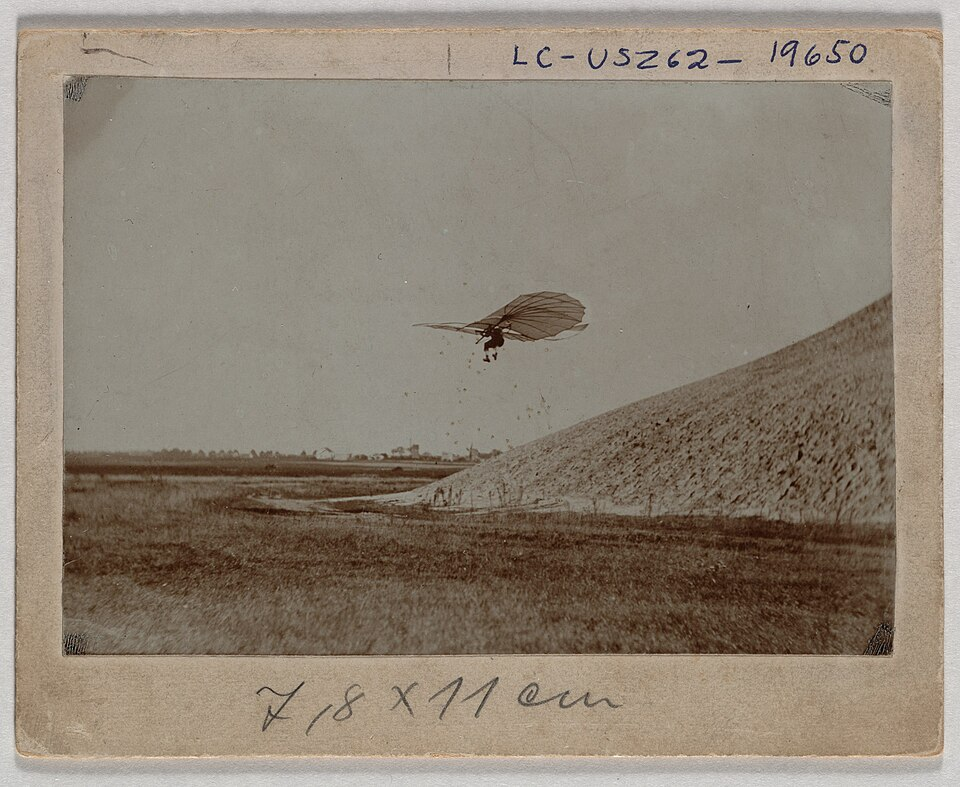
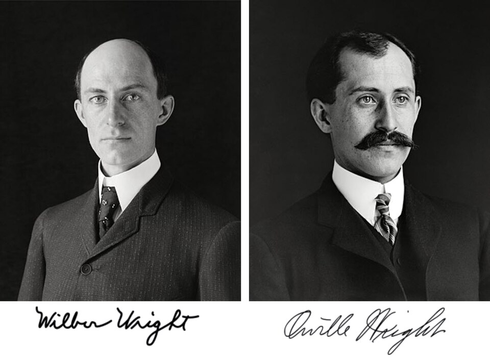
Viri: [1] [4] [8]
Izziv · Dejanje 1
Kako pilot nadzoruje nagib?
Sunek vetra nagne jadralno letalo na levo. Lilienthal bi zamahnil z nogami v desno, a večje letalo je pretežko, da bi ga uravnaval s telesom. Imaš delavnico koles: smrekove letve, platno, jekleno žico, vrvice in orodje.
Kako bi pilotu dal nadzor nad nagibom levo in desno, ne da bi premikal svoje telo?
Tvoj odgovor → napiši ga vodniku igre v polje »Tvoje sporočilo« v panelu na levi (na telefonu spodaj). Piši s svojimi besedami, tudi pol ideje ali grobo skico je dovolj. Vodnik te bo vprašal naprej, namig pa dobiš samo, če ga prosiš.
Namig 1
Opazuj ptice v vetru. Ko jih sunek nagne, ne premaknejo telesa. Kaj naredijo s konicami kril?
Namig 2
Ptič zasuka konico enega krila tako, da jo zrak zadene pod večjim kotom, konico drugega pa pod manjšim. Ena stran dobi več vzgona, druga manj, in ptič se poravna.
Namig 3
Dvokrilnik je kot škatla: zgornje krilo, spodnje krilo in vmesni opornike. Vzemi dolgo kartonsko škatlo brez pokrovov in njena konca zasukaj vsakega v svojo smer. Kaj se zgodi s ploskvami?
Razkritje · Dejanje 1
Zvijanje kril
Wilbur je dolgo opazoval ptice in sklepal, da se poravnajo tako, da spremenijo kot konic kril. Poleti 1899 je v delavnici med prsti vrtel dolgo kartonsko škatlo, v kateri so prodajali zračnice. Ko je konca zasukal vsakega v svojo smer, se je zgornja ploskev na enem koncu nagnila naprej, na drugem nazaj, škatla pa je ostala trdna.
To je postalo zvijanje kril. Dvokrilnik je povezan z opornicami in žicami kot most, zato ostane trden. Vrvice pa konce obeh kril zasukajo v nasprotnih smereh. Na eni strani krilo zadene zrak pod večjim kotom in dobi več vzgona, na drugi manj. Ni tečajev in ni dodatnih delov.
27. julija 1899 sta brata preizkusila zamisel na dvokrilnem zmaju z razponom 1,5 m. Wilbur ga je z vrvicami zvijal s tal in zmaj se je nagibal, kot je hotel. Prvi del nadzora je bil rešen, še preden sta zgradila letalo za človeka.
Viri: [1] [3] [5]
Dejanje 2 · Kitty Hawk in Dayton · 1900–1901
Tabele lažejo
Za poskuse z letalom za človeka potrebujeta močan in enakomeren veter, mehko podlago za padce in mir pred radovedneži. Wilbur preuči podatke vremenske službe in izbere Kitty Hawk v Severni Karolini: dolge peščene sipine ob Atlantiku, kamor prideš le z ladjico.
Jadralno letalo iz leta 1900 ima razpon 5,3 m in tehta 24 kg. Večinoma ga spuščata kot zmaja na vrvi. Wilbur prosto jadra le en dan, okoli ducatkrat.
Leta 1901 se vrneta z največjim jadralnim letalom, kar so jih kdaj preizkusili: razpon 6,7 m, površina 27 m², 44 kg. Izdelala sta ga po Lilienthalovih tabelah in po enačbi za vzgon, ki uporablja več kot sto let staro Smeatonovo konstanto. Letalo dvigne le približno tretjino vzgona, ki sta ga izračunala. Poleg tega se ob zvijanju kril včasih obrne v napačno smer.
Na vlaku proti domu je Wilbur potrt in Orvillu reče, da človek ne bo letel še tisoč let.
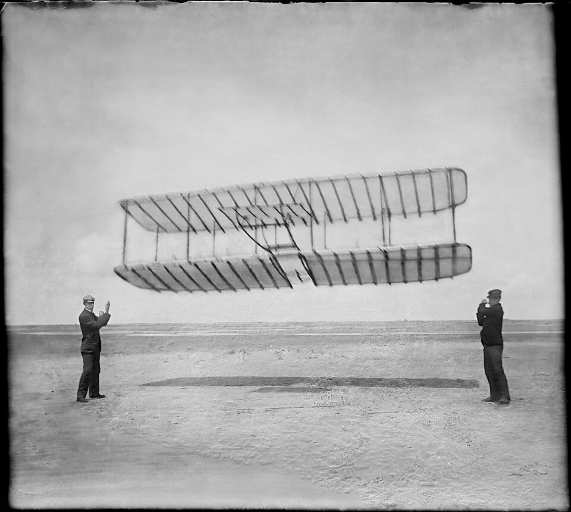
Viri: [1] [3]
Izziv · Dejanje 2
Kje je napaka?
Jadralno letalo nosi tretjino tega, kar napovedujejo izračuni. Napaka je lahko v Lilienthalovih tabelah, v stari konstanti, v obliki tvojega krila ali v meritvah na sipini, kjer veter ves čas niha. Pred naslednjim letalom imaš na voljo zimo v delavnici.
Kako ugotoviš, kje je napaka, in kako dobiš podatke o krilih, ki jim lahko zaupaš?
Tvoj odgovor → napiši ga vodniku igre v polje »Tvoje sporočilo« v panelu na levi (na telefonu spodaj). Piši s svojimi besedami, tudi pol ideje ali grobo skico je dovolj. Vodnik te bo vprašal naprej, namig pa dobiš samo, če ga prosiš.
Namig 1
Na sipini se veter spreminja iz sekunde v sekundo. Kako bi dve obliki krila primerjal v natanko enakem vetru?
Namig 2
Veter lahko narediš sam: majhen, enakomeren in v zaprtem prostoru. Krila so lahko majhni modeli.
Namig 3
Če silo na model krila v istem vetru uravnovesiš s silo na ravno ploščico, postavljeno pravokotno na veter, se hitrost vetra pri razmerju obeh sil okrajša.
Razkritje · Dejanje 2
Vetrovnik iz delavnice koles
Najprej sta naredila poskus s kolesom. Pred krmilo sta vodoravno pritrdila prosto vrteče se kolo, nanj pa ravno ploščico in ukrivljeno krilo. Med vožnjo je veter pritiskal na obe in kolo se je ustavilo tam, kjer sta se sili uravnovesili. Že to je pokazalo, da se Lilienthalovi podatki ne ujemajo.
Med oktobrom in decembrom 1901 sta v delavnici zgradila vetrovnik: lesen kanal, dolg 1,8 m, z ventilatorjem, ki ga je poganjala transmisijska gred delavnice. Vanj sta dodala usmerjevalnik zraka iz ozkih navpičnih ploskev, na vrh pa okno za opazovanje. Tehtnici iz kolesarskih naper in odpadne kovine sta uravnovesili silo na model krila s silo na ploščico. Odčitek kota na lestvici je dal razmerje sil.
Preizkusila sta okoli 200 modelov kril, 38 od njih podrobno. Smeatonova konstanta je bila namesto 0,0054 bliže 0,0033, zato so stari izračuni obljubljali preveč vzgona. Daljša in ožja krila so delovala bolje. Imela sta natančnejše tabele vzgona in upora, kot jih je imel kdorkoli pred njima.
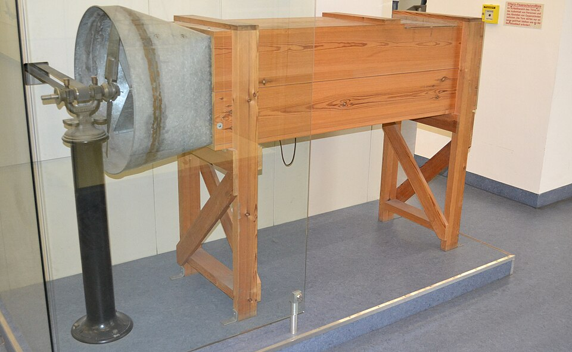
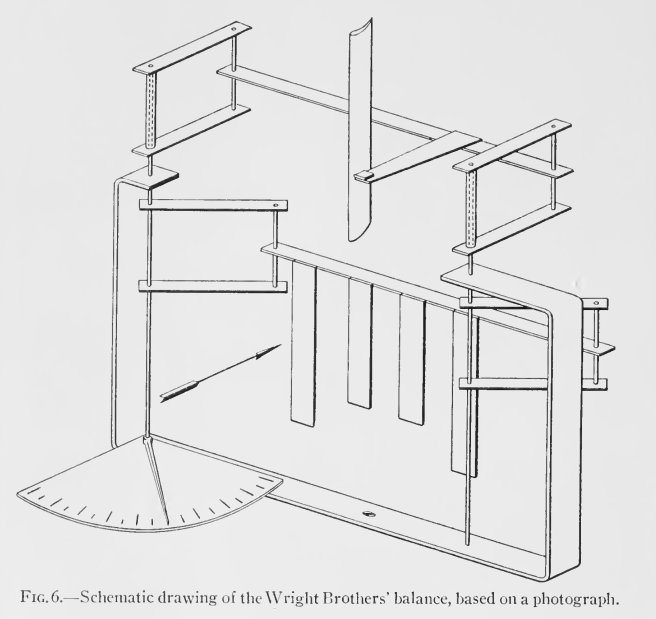
Viri: [1] [3] [10]
Dejanje 3 · Kill Devil Hills · jesen 1902
Letalo se zavrti v pesek
Novo jadralno letalo je narejeno po tabelah iz vetrovnika: razpon 9,8 m, globina krila 1,5 m, površina 28 m², 53 kg. Spredaj ima vodoravno krmilo za dviganje in spuščanje nosu. Pilot leži na trebuhu v zibelki za boke. Ko premakne boke, zibelka potegne žice in zvije krila. Zadaj sta dve nepremični navpični plavuti, ki naj bi letalo držali v smeri.
Letalo nosi, kot sta izračunala. Vendar se včasih zgodi tole: levo krilo se povesi, pilot krila zvije, da bi ga dvignil, letalo pa se namesto tega zasuka okoli navpične osi, zdrsne vstran in se z nizkim krilom zarije v pesek. Brata temu rečeta »kopanje vodnjaka«.
Viri: [1] [3] [6]
Izziv · Dejanje 3
Zakaj se zavrti in kaj spremeniš?
Zvijanje kril dela, tabele držijo, letalo nosi. Pa vendar se letalo ob popravljanju nagiba zasuka in zarije v pesek. Pomagaš si lahko z vsem, kar je na letalu: sprednje krmilo, zvijanje kril, zadnji plavuti, zibelka za boke.
Zakaj se letalo zasuka in kaj spremeniš, da bo pilot nagib popravil varno?
Tvoj odgovor → napiši ga vodniku igre v polje »Tvoje sporočilo« v panelu na levi (na telefonu spodaj). Piši s svojimi besedami, tudi pol ideje ali grobo skico je dovolj. Vodnik te bo vprašal naprej, namig pa dobiš samo, če ga prosiš.
Namig 1
Krilo, ki mu zvijanje poveča vzgon, se zraku tudi bolj upira. Kaj naredi večji upor na samo eni strani s smerjo nosu?
Namig 2
Nepremična plavut se kot vetrnica vedno obrne proti zraku. Kaj naredi, ko letalo že drsi vstran? In kaj bi lahko naredila, če bi se lahko premikala?
Razkritje · Dejanje 3
Gibljivo smerno krmilo: nadzor v treh oseh
Krilo z več vzgona se je zraku tudi bolj upiralo, zato se je nos zasukal proti njemu, letalo pa je zdrsnilo vstran. Nepremični plavuti sta letalo v tem drsenju še bolj zasukali. Danes temu pravimo neželeni zasuk.
Ponoči 2. oktobra 1902 Orville premišljuje o tem. V dnevnik zapiše, da je »preštudiral novo navpično krmilo«: plavut mora biti gibljiva, da pilot z njo zasuk prepreči. Wilbur predlaga, da jo povežeta kar z zibelko za boke. En sam premik bokov tako hkrati zvije krila in zasuka smerno krmilo.
S tem sta imela nadzor v vseh treh oseh: sprednje krmilo za nos gor in dol, zvijanje kril za nagib in smerno krmilo za smer. Tisto jesen sta naredila več sto poletov, nekajkrat več kot 180 m in do 26 sekund. Marca 1903 sta prijavila patent. V njem ni stroja, ki leti, ampak sistem za nadzor letala. Tako se krmili vsako letalo še danes.
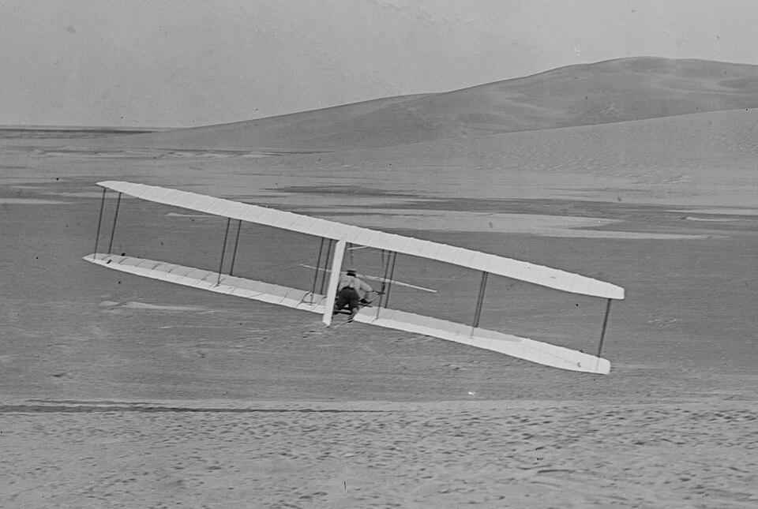
Viri: [1] [3] [6]
Dejanje 4 · Dayton · zima 1902/03
Moč, ki je nihče ne zna izračunati
Jadralno letalo leti in ga obvladata. Zdaj mora vzleteti z ravnih tal s svojo močjo. Izračunata, da bo letalo z motorjem in pilotom tehtalo okoli 290 kg in bo za let potrebovalo okoli 40 kg sile potiska pri hitrosti okoli 45 km/h. Motor bi moral dati vsaj 8 KM in tehtati največ okoli 82 kg.
Pišeta več proizvajalcem motorjev, a nihče nima dovolj lahkega motorja. Ladjedelnice delajo ladijske vijake večinoma po izkušnjah: izdelajo enega, ga preizkusijo in popravijo. Uporabne enačbe, po kateri bi pogon za zrak izračunal vnaprej, ne najdeta nikjer.
Medtem Samuel Langley, tajnik Smithsonovega inštituta, z več kot 50.000 dolarji državnega denarja gradi velik Aerodrome z bencinskim motorjem.
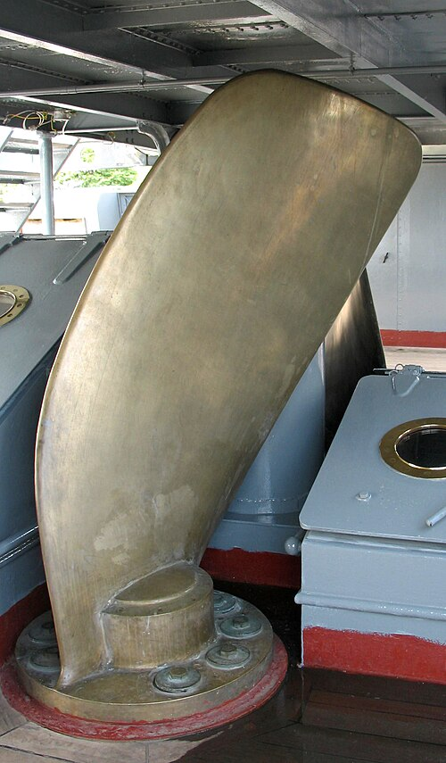
Viri: [1] [2] [8]
Izziv · Dejanje 4
Kako moč spremeniš v gibanje naprej?
Recimo, da motor dobiš. Imaš delavnico koles, verige, zobnike, ležaje, smreko in svoje tabele iz vetrovnika. Vse, kar dodaš, mora letalo nositi.
Kako boš moč motorja spremenil v potisk naprej, kako boš to izračunal, preden kar koli zgradiš, in kako boš pogon postavil na letalo?
Tvoj odgovor → napiši ga vodniku igre v polje »Tvoje sporočilo« v panelu na levi (na telefonu spodaj). Piši s svojimi besedami, tudi pol ideje ali grobo skico je dovolj. Vodnik te bo vprašal naprej, namig pa dobiš samo, če ga prosiš.
Namig 1
Kaj natanko sta izmerila v vetrovniku? Kateri del letala že znata izračunati vnaprej?
Namig 2
Kaj dela krilo, če ga postaviš pokonci in ga zavrtiš okoli osi?
Namig 3
Ali gre košček vrteče se lopatice ob konici skozi zrak enako hitro kot košček ob osi? In kaj naredi letalo, če en sam vrteč se del vrača zasuk motorja?
Razkritje · Dejanje 4
Propeler je vrteče se krilo
Motor. Mehanik Charlie Taylor ga je v šestih tednih zgradil sam, po bratovih skicah. Imel je štiri vodoravne valje in ohišje iz aluminija z bakrom, kar je bilo takrat redko. Tehtal je 82 kg in dal 12 KM pri 1025 obratih na minuto.
Propeler. Po mesecih prepirov sta prišla do ključne misli: propeler je krilo, ki se giblje po vijačnici, njegov vzgon pa kaže naprej. Zato sta lahko uporabila svoje tabele. Vsak košček lopatice dobi zrak iz dveh smeri, od leta naprej in od vrtenja, in vsak mora stati pod najboljšim kotom. Ker se košček ob konici vrti hitreje, je lopatica zvita: ob osi strma, na konici položna.
| razdalja od osi | hitrost vrtenja | kot zraka | kot lopatice (+5°) |
|---|---|---|---|
| 0,4 m | 15 m/s | 39° | ≈ 44° |
| 0,8 m | 29 m/s | 22° | ≈ 27° |
| 1,3 m (konica) | 48 m/s | 14° | ≈ 19° |
Tabela je izračun za ponazoritev pri 43 km/h in 350 obratih na minuto, ne meritev bratov.
Propelerja sta bila iz treh plasti lepljene smreke, ročno izrezljana, s premerom 2,6 m. Konice sta prevlekla s platnom in vse pobarvala z aluminijasto barvo. Marca 1903 je Wilbur v zvezek zapisal izkoristek 66 %. Sodobne meritve na replikah so pokazale več kot 75 % v pogojih prvega leta in do 82 % v najboljši točki.
Postavitev. Dva potisna propelerja sta stala zadaj, za krili, levo in desno od sredine. Motor je ležal na spodnjem krilu desno od sredine, pilot pa levo od njega. Desno krilo je bilo 10 cm daljše, ker je bil motor 14–18 kg težji od pilota. Moč je šla do propelerjev po dveh verigah, podobnih kolesarskim. Ena veriga je bila prekrižana, zato sta se propelerja vrtela v nasprotnih smereh in se je zasuk izničil. Zobniki v razmerju 23 : 8 so propelerja upočasnili. Na preizkusu sta dosegla 351 obratov na minuto in 60 kg potiska, več kot potrebnih 41 kg.
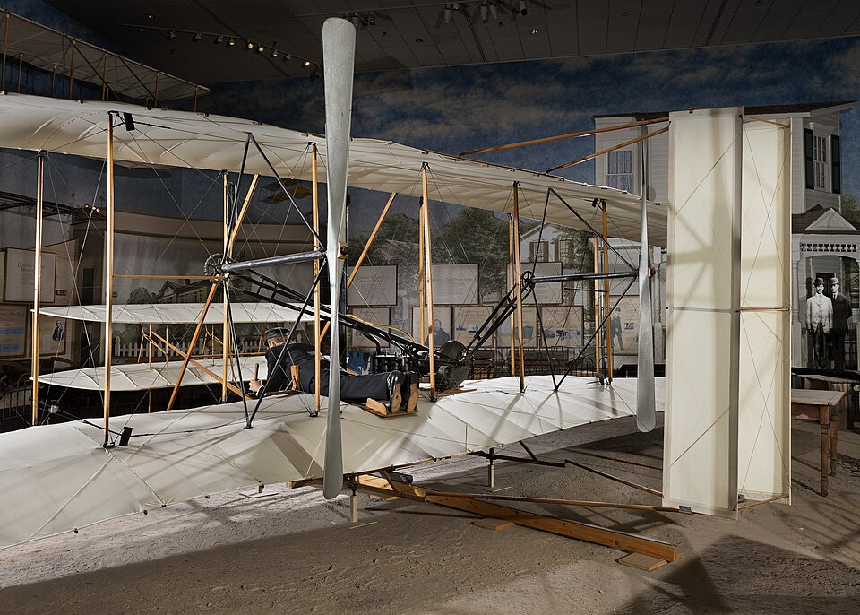
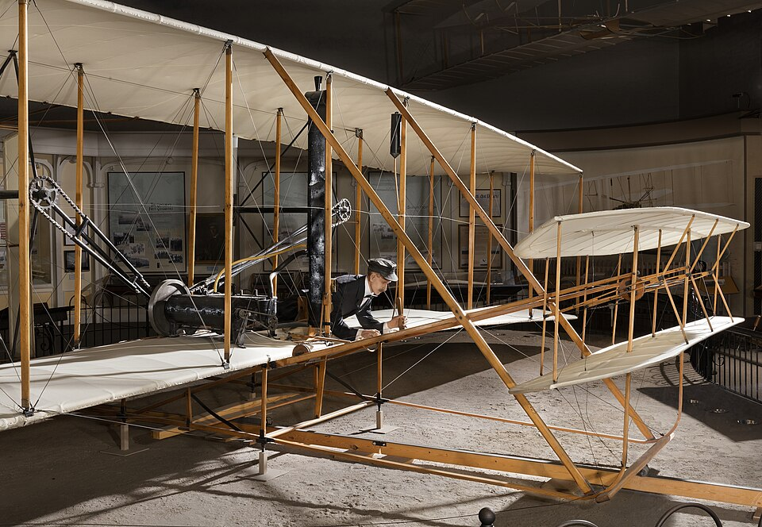
Viri: [1] [2] [7] [9]
Dejanje 5 · Kill Devil Hills · november in december 1903
Pesek, veter in en poskus
Letalo ima razpon 12,3 m in tehta 274 kg, s pilotom okoli 340 kg. Koles nima, samo drsnike kot sani. 5. novembra 1903 prvič zaženeta motor na letalu, a preden ga uglasita, se razrahljajo pesta propelerjev. Gredi morata dvakrat nazaj v Dayton. Orville 30. novembra odpotuje tja in naredi nove gredi iz vzmetnega jekla. Vgradita jih 12. decembra.
Medtem Langleyjev Aerodrome s pilotom dvakrat, oktobra in 8. decembra 1903, ob izstrelitvi s strehe ladje pade naravnost v reko Potomac.
14. decembra brata vržeta kovanec. Wilbur zmaga. Letalo vzleti po pobočju navzdol, a pilot preveč dvigne nos, letalo izgubi hitrost in po treh sekundah pade v pesek. Poškodbe so majhne.
Viri: [1] [2] [8]
Izziv · Dejanje 5
Kako vzletiš z ravnega peska?
Letalo nima koles, motor ima samo 12 KM, pobočje pa se je izkazalo za nevarno. Ostane ravna sipina z mehkim peskom.
Kako boš 340 kg težko letalo brez koles spravil v zrak z ravnega peska?
Tvoj odgovor → napiši ga vodniku igre v polje »Tvoje sporočilo« v panelu na levi (na telefonu spodaj). Piši s svojimi besedami, tudi pol ideje ali grobo skico je dovolj. Vodnik te bo vprašal naprej, namig pa dobiš samo, če ga prosiš.
Namig 1
Kolesa se v mehkem pesku udirajo, drsniki pa se drgnejo. Kakšno podlago bi lahko prinesel s seboj in jo položil na pesek?
Namig 2
Krilo nosi glede na hitrost zraka, ne glede na hitrost po tleh. Kaj ti pri vzletu da močan veter v nos?
Razkritje · Dejanje 5
17. december 1903, 10.35
Brata sta s seboj prinesla 18 m dolgo tirnico iz lesenih tramičev, ki sta jo imenovala »Junction Railroad«. Drsniki letala so ležali na vozičku iz deske z lesenim kolescem, ki je tekel po tirnici.
17. decembra je pihalo s povprečno več kot 32 km/h. Tirnico sta položila na ravna tla, obrnjeno proti vetru. Ob 10.35 je Orville vzletel in letel 12 sekund ter 37 m. Ker je pihalo tako močno, je letel glede na tla s samo okoli 11 km/h. Wilbur je tekel ob krilu. Fotografijo je posnel John T. Daniels z bližnje reševalne postaje.
Tisti dan sta letela štirikrat. Zadnji let je bil Wilburjev: 59 sekund in 260 m nad tlemi. Kmalu zatem je sunek vetra letalo prevrnil in ga razbil. Nikoli več ni letelo.
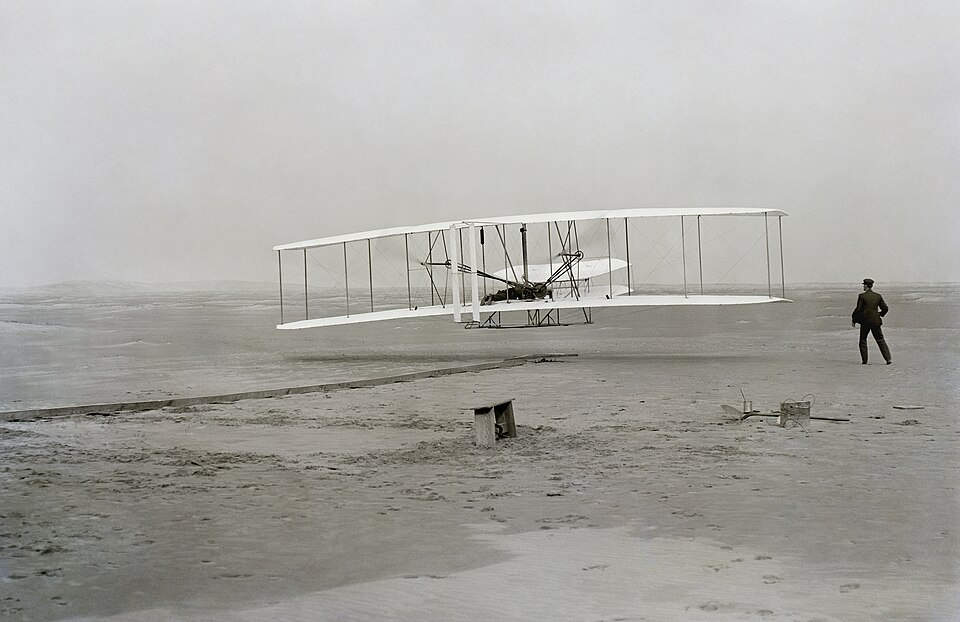
Viri: [1] [2]
Epilog · 1904–1908 in danes
Od 12 sekund do 38 minut
Leta 1904 sta letela na pašniku Huffman Prairie pri Daytonu, kjer je pihalo veliko manj kot na Kitty Hawku. Tirnica je morala biti daljša, 7. septembra 1904 pa sta prvič uporabila katapult: utež, ki je padla z lesenega stolpa, je po vrvi potegnila letalo naprej. Še istega leta sta naredila prvi krog.
Letalo iz leta 1905 je bilo prvo zares uporabno letalo. Smerno krmilo je dobilo svojo ročico, ločeno od zvijanja kril. Med 26. septembrom in 5. oktobrom 1905 sta letela po 17 do 38 minut. Wilbur je zadnji let končal po 39 km, ko je zmanjkalo goriva.
8. avgusta 1908 je Wilbur na dirkališču pri Le Mansu v Franciji prvič letel javno in svet je verjel. Krilca, ločene gibljive ploskve na koncih kril, je britanski patent opisal že leta 1868, a so ga pozabili. Po letu 1915 so krilca zamenjala zvijanje kril. Načelo bratov Wright, nadzor letala v treh oseh, pa velja še danes.
Kaj pa pogon? Brata sta izumila propeler kot vrteče se krilo. Ena sodobna pot iz te igre je drugačna: trak z lopaticami, ki delajo z vzgonom. Preberi več na LIFT-BELT.
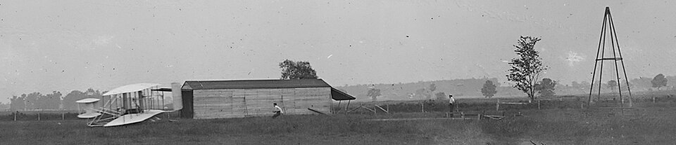
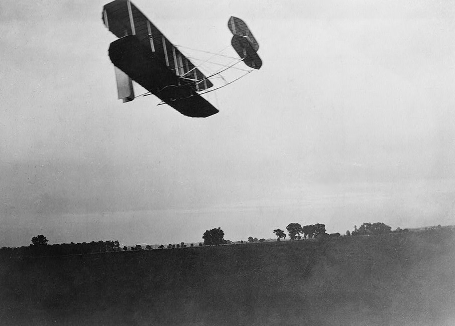
Viri: [1] [5]